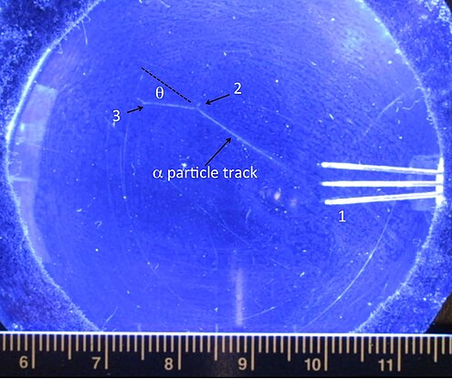
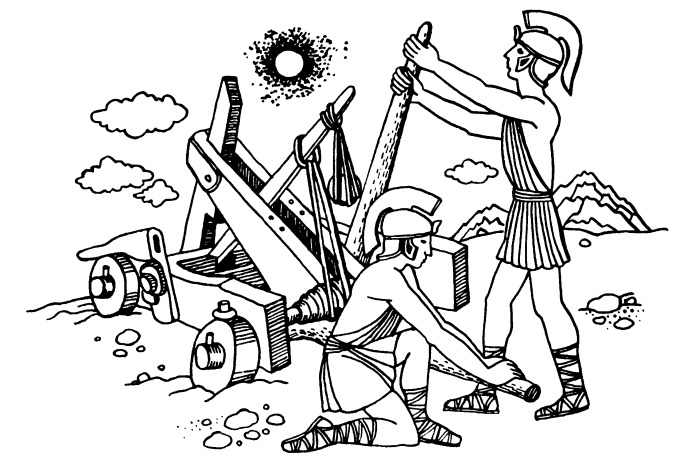

Mechanical motion of a body is the change in its position with time relative to other bodies. We encounter motion of bodies very frequently in our everyday life, science and technology. We observe the motion of human beings and animals, the motion of water in rivers and seas, and the motion of air (wind). Transport facilities, various mechanisms, machines, instruments, projectiles, etc. execute motion. The Earth and other planets move in space as well as comets, meteors (Fig. 1), the Moon, artificial satellites of the Earth and spacecraft launched to other planets of the Solar system. The Sun moves relative to other stars which, in turn, move relative to one another. Atoms, molecules, electrons, protons, alpha-particles (Fig. 2) and other elementary particles (the smallest parts of matter) are in motion.
The branch of physics that studies the mechanical motion of bodies and the conditions of rest is called mechanics (from the Greek word mechane - machine, tool). The first studies on mechanical motion date back to ancient times. They were prompted by the practical needs of human beings, e.g. agriculture, the manufacture of tools, and house construction.
Fig. 1: A meteor in the sky.
Practical ly all physical phenomena involve the motion of bodies. Thus, we begin thestudy of physics with an analysis of the motion of bodies. This branch of physics is called mechanics. The word “mechanics” takes its origin from the Greek word mechane which means machine or tool. Even in ancient times, Egyptians, and later Greeks, Romans and other peoples constructed various machines for transportation, construction and military purposes (Fig. 3). The operation of these machines was based on the movement of levers, wheels, ropes, and other mechanisms, which caused the motion of loads being lifted or displaced. The investigation of the operation of these machines gave birth to the science about the motion of bodies, viz. mechanics. Mechanics also includes the study of conditions under which bodies re main at rest, viz. equilibrium conditions. Such problems play a decisive role in construction and industrial engineering. When a house built of toy blocks, a large building or a bridge break, this means that equilibrium con ditions for these bodies have been violated.
Fig. 2: Rapidly moving alpha-particles leave behind cloudy tracks of water drops in a Wilson cloud chamber.
Fig. 3: Missile weapon of ancient Greeks.
To study motion, we must first of all know how to describe it. For the time being, we are not interested in the cause of motion. The branch ofmechanics which studies motion without investigating the reasons behind it is called kinematics.
IThe motion of each body can be analysed relative to any other bodies. A given body moves differently relative to different bodies: a suitcase lying on a shelf in a moving train is at rest relative to the carriage but moves relative to the Earth. A balloon carried by wind moves relative to the Earth but is at rest relative to air. An aeroplane flying in a squadron is at rest relative to the other planes in the squadron but moves relative to the Earth at a high velocity (say, 800 km/h); the velocity of this plane relative to a plane moving in the opposite direction with the same velocity is 1600 km/h.
In movies, the same motion is often shown relative to different bodies. For example, a train is shown moving against the background of a land scape (motion relative to the Earth), and then a compartment of a carriage with trees running past the window (motion relative to the carriage).
Every motion, as well as the state o f rest (as a special case of motion), is relative. In order to answer the question whether a body is at rest or in mo tion and what the nature of this motion is, it is necessary to indicate the bodies relative to which the motion of the given body is considered. Other wise, the statement about the motion of the body is meaningless.
The bodies relative to which a given motion is considered form a reference system. The choice of the reference system for analysing a given motion depends on the conditions of the problem. For example, if an enemy plane is to be hit from the ground, the aiming should depend on the velocity of the plane in the reference system fixed to the Earth (in the exam ple considered above, this velocity was 800 km/h), but to hit the same plane from another plane flying towards the first one, one should proceed from the velocity of the target in the reference system fixed to the second plane flying from the opposite direction (1600 km/h). When motion on the surface of the Earth is studied, the reference system is usually fixed to the Earth (although, as was noted above, a train, a plane or any other body can also be taken as a reference system). Studying the motion of the Earth as a whole or the motion of planets, the Sun and stars are taken as the reference system. It will be shown in Chap. 2 that this system is especially convenient for studying the laws of dynamics.